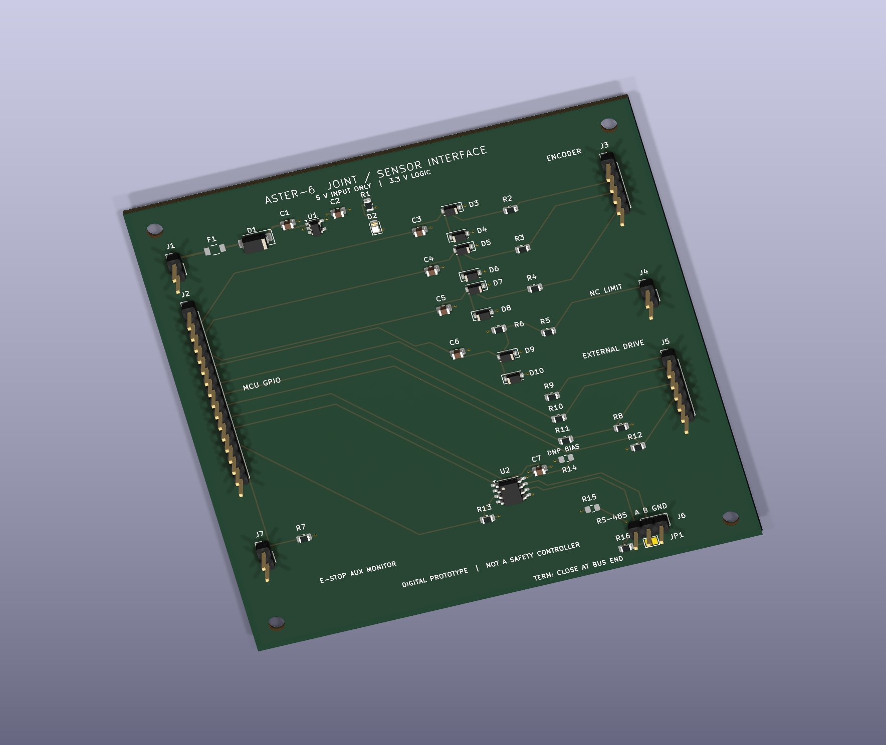

← Project homeASTER-6 · KiCad electronics source
Illustrated electronics tour · Project home · Engineering design chapter
This is the authoritative source for the 100 × 100 mm, four-layer joint/sensor interface: 44 schematic components and 48 PCB footprints, including four mounting holes. An external 3.3 V controller connects to encoder/limit inputs, a separate motor drive and RS-485. The PCB implements logic interfacing; the controller, motor power stage and embedded firmware are external to this design.
Inspect the PCB online, rotate the 3D board or zoom the schematic without installing KiCad or downloading files. The native project steps below are optional for offline editing.
Public electronics download release — download the KiCad project with its schematic, board and local footprint context, or choose the PCB STEP pack for mechanical CAD. The native-file guide explains opening the project. These public GitHub downloads work independently of the separately pending Sites download buttons.

Open the editable project
For optional offline editing, download and extract the complete repository using Code → Download ZIP, or clone it. With KiCad 10 and its standard libraries installed, open joint_interface.kicad_pro, then its schematic or PCB. GitHub shows native files as source; PDF/PNG links above provide readable previews.
Keep this folder intact. fp-lib-table resolves the project-local F1 footprint through ${KIPRJMOD}; sym-lib-table resolves stock symbols. Downloading a single native file omits this library context. On Windows, OPEN_PCB_LAYOUT.cmd at the repository root opens the downloaded layout.
Supply regulated 5 V, with 3.3 V GPIO and a shared 150 mA logic-load design budget. Read the tour for connector roles and the design chapter for complete pin contracts, calculations, assumptions and reproduction commands. Saved native rules/connectivity checks pass within their documented scope; no physical board was built or qualified.